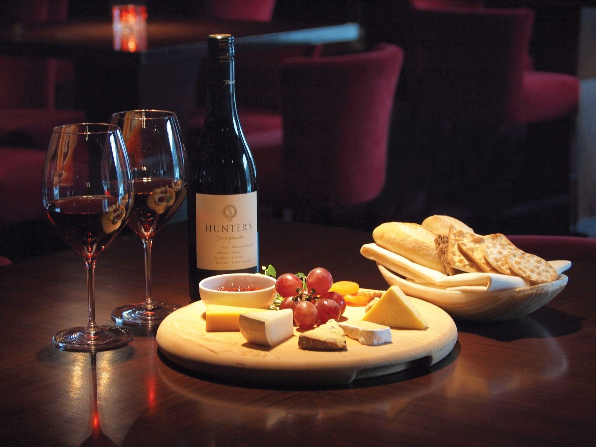

Tabela de Harmonização dos Vinhos
| Vinho | Harmoniza com | Por que combina? |
|---|---|---|
| Tinto Reserva Premium | Carnes vermelhas e massas | Seu sabor encorpado e notas intensas equilibram perfeitamente pratos mais fortes, como carnes grelhadas e massas com molho vermelho. |
| Branco Seco Chardonnay | Peixes e frutos do mar | Por ser leve e refrescante, combina com pratos delicados, valorizando o sabor suave dos peixes e frutos do mar. |
| Rosé Premium | Petiscos, pizzas e saladas | Seu perfil frutado e leve traz equilíbrio para pratos descontraídos, especialmente pizzas, queijos e entradas. |
| Cabernet Sauvignon | Cordeiro e carnes fortes | O sabor intenso e estruturado acompanha muito bem carnes mais gordurosas, trazendo equilíbrio ao paladar. |
| Sauvignon Blanc | Sushi, saladas e peixes | Sua acidez e aroma cítrico combinam perfeitamente com pratos leves, especialmente peixes crus e saladas frescas. |
Dicas de Harmonização
A harmonização entre vinho e comida acontece quando os sabores se complementam. Vinhos tintos costumam combinar com pratos mais intensos e carnes vermelhas, enquanto vinhos brancos harmonizam melhor com peixes, frutos do mar e pratos leves.
Já os vinhos rosé são versáteis e combinam muito bem com petiscos, pizzas e refeições leves, sendo ideais para encontros e dias quentes.
